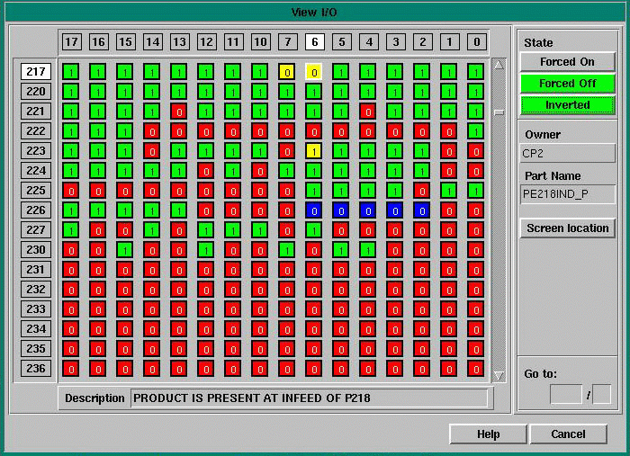

FortnaPlus© displays the I/O state for every part on the system. The word addresses are shown on the left edge of the screen in ascending order. Any user can view this screen but only those with appropriate security clearance can use this screen to force the state on and/or off, and invert system I/O. This screen can also be accessed with the F3 key.
 |
Use the arrow keys to move your cursor. Page up and page down will view another page of I/O. The word address down the left will correspond to a side of a board in the control panel. The bit address is shown in octal and makes up the second half of an I/O address. This address identifies the corresponding wire to an input or output module.
To Go To A Particular Address
Use the mouse to click at the address or
1. Type in the address in the 'Go To:' area in the lower right corner.
2. Press Enter.
To Force a Device
1.Highlight the desired bit.
2.Press the Force On button.
3.Press a second time to remove the force.
The input or output device must be owned and controlled by this machine in order to be forced. There is an exception. An integer flag exists at record number 75 of the Integer Flags Menu. The flag, PROTECT FORCE, when set to value of 1, allows any machine to force the I/O of the system. When the flag value is '0', only its owner may force states.
To View Screen Location of Device
1.Highlight the desired device address
2.Press the 'Screen location' button to view the part encircled.
3.Press Escape to return to the Device I/O Screen
Copyright © 2001 Fortna Inc. All rights reserved.